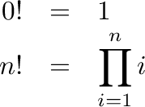
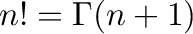

Returns the factorial of its argument:

The operator can be placed on the canvas in two ways:

which is how it is implemented in Minsky.Minsky provides this function because of its relationship to the derivative of the Gamma function (and factorials).